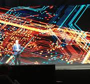

History
TechCon started as a small gathering of passionate technology
enthusiasts in 2010. Over the years, it has grown into one of the
leading technology conferences worldwide, attracting thousands of
attendees annually. From humble beginnings in a local community
center, TechCon has evolved to host industry leaders, cutting-edge
startups, and influential innovators, showcasing the latest trends and
breakthroughs in technology

Mission
At TechCon 2024, our mission is to foster innovation, collaboration,
and education within the technology community. We aim to create an
inclusive platform where developers, entrepreneurs, researchers, and
tech enthusiasts come together to share knowledge, inspire creativity,
and drive the future of technology forward. By emphasizing diversity,
sustainability, and cutting-edge innovation, TechCon empowers
individuals and organizations to make a positive impact on the global
tech landscape.

Past Speakers
TechCon has hosted many renowned speakers who have shaped the
technology industry. Some highlights include:
Dr. Alice Morgan – A pioneer in artificial intelligence
and machine learning, Alice has led transformative projects in
healthcare technology.
Jason Lee –A cybersecurity expert who has contributed
significantly to developing secure online infrastructures globally.
Maria Gonzales –An advocate for women in tech, Maria has
championed numerous initiatives to increase diversity in STEM fields.